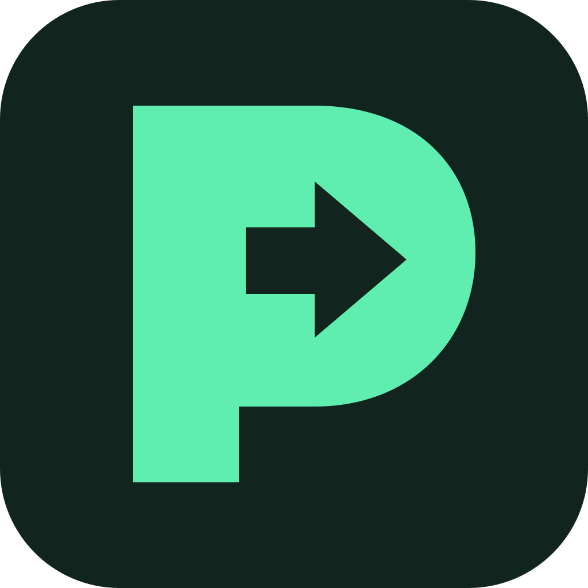
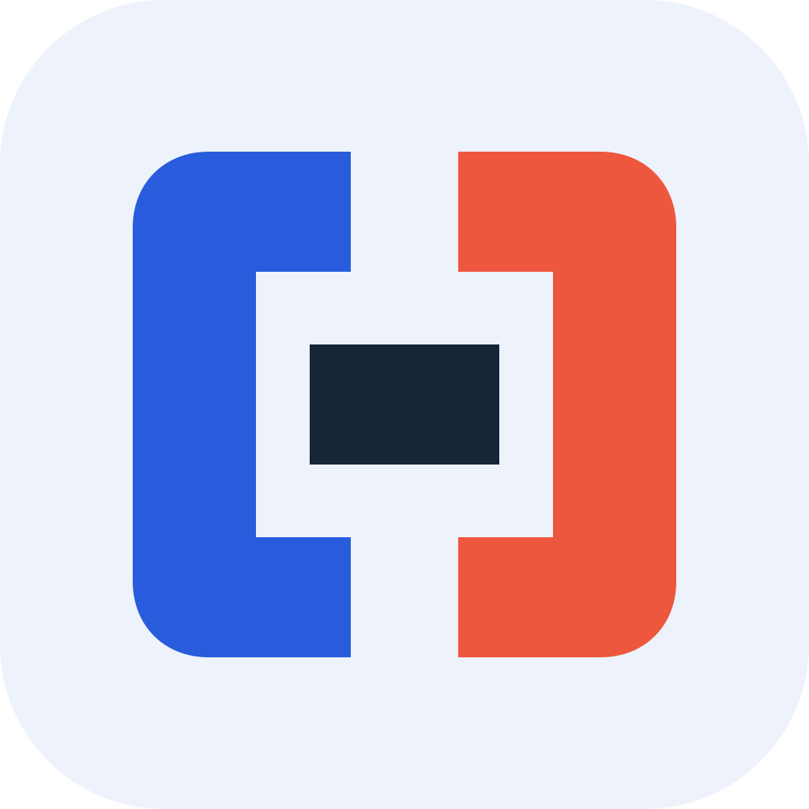

A
Forward P

PebloyWindows icon sizes
PebloyDatabase workspace
A compact P with a forward arrow in negative space. The clearest connection to Pebloy's name and deployment action.
Forest / Mint
Identity studies / September 2026
Three directions for the database deployment workspace.
APPROVED · A / FORWARD P

PebloyWindows icon sizes
A compact P with a forward arrow in negative space. The clearest connection to Pebloy's name and deployment action.

PebloyWindows icon sizes
Two schema boundaries joined by one bridge. A more technical direction, with source and target given equal visual weight.
Windows icon sizes
A pair of schema layers with a distinct top marker. The most architectural direction, with strong contrast at small sizes.
Selected direction: AThe P identifies Pebloy directly; the arrow carries the action without adding a separate badge. B and C remain here as the original alternatives.